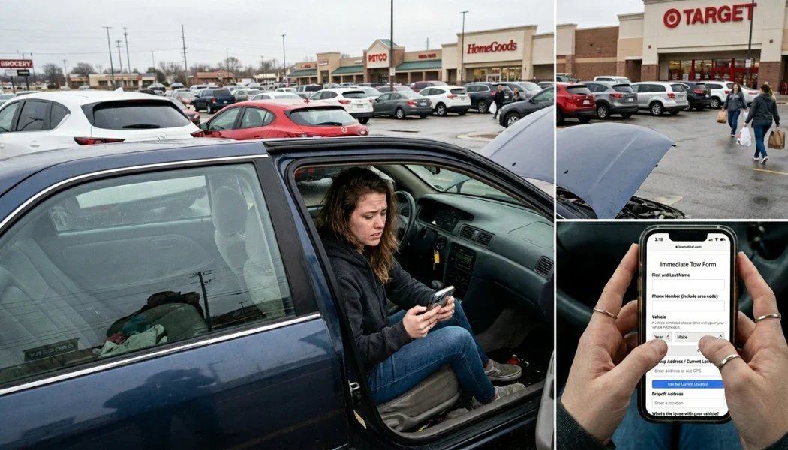

How Tow Companies Can Book Jobs in 10 Seconds (Without a Phone Call)

For decades, towing has revolved around one thing: the phone ringing.
But here's the reality in 2026:
- People don't like calling.
- Property managers don't want to sit on hold.
- Dealership advisors are juggling customers.
- Apartment managers want fast, documented requests.
- After-hours calls get missed.
And every missed or delayed call is money walking away.
The 10-Second Tow: How It Works
Instead of calling, the customer or partner:
- 1. Scan or ClickQR code or direct URL
- 2. Fill the FormVehicle, location, service
- 3. SubmitThat's it. Done.
Behind the scenes:
- The system calculates pricing instantly
- Job details are captured perfectly
- The correct driver is notified automatically
- Confirmation is sent via text
QR Codes + Direct Links: Post Them Everywhere
QR codes are powerful — but they're just one piece. Customers can also go directly to your booking URL from anywhere.
Smart tow companies should post their booking link:
- Website homepage
- Google Business Profile
- Facebook bio
- Instagram bio
- X (Twitter)
- Email signatures
- Invoices
- Business cards
- Apartment office doors
- Mechanic shop lots
- Dealership signage
- Truck wraps
Apartment Complex Advantage
Apartment managers deal with:
- Illegally parked vehicles
- Expired tags
- Abandoned cars
- Broken-down vehicles
They don't want to call every time.
With a QR code posted in the leasing office or parking area — or a saved direct link in their bookmarks — they can:
Scan or clickEnter plate + locationSubmit
Tow requested in seconds.
It also creates a digital record of who requested the tow and when — protecting both the property and the tow company. For property accounts, this is a serious operational upgrade.
Dealership & Mechanic Lot Forms
Service advisors are busy. They're not stopping to make a 5-minute call.
A dedicated dealership tow link lets them:
- Enter customer name
- Vehicle info
- Pickup location
- Drop-off destination
Done.
No back-and-forth. No call interruptions mid-sentence. No miscommunication. It makes you the easiest towing partner they've ever worked with.
And in this industry, easiest usually wins.
After-Hours Intake (Without Hiring Night Staff)
Most tow companies either:
- Miss calls overnight
- Forward to a tired owner
- Pay expensive overnight dispatch
But a web form works 24/7.
At 1:47 AM, someone can:
- Submit their info
- Get instant pricing
- Receive confirmation
- Trigger driver notification
Even if you're asleep. This doesn't replace live calls — it captures the customers who prefer not to call in the first place. And that group is growing every year.
Instant Quote Calculation
One of the biggest friction points in towing is price uncertainty.
With structured forms:
- Base rate is predefined
- Per-mile rate is built in
- Fuel surcharge is calculated
- Special conditions can be selected
The system returns the price instantly.
No guessing. No underquoting. No inconsistent pricing between dispatchers. Just standardized, profitable quoting every time.
Automatic Driver Notification
The real power isn't just the form. It's what happens after submission.
The system can:
- Send a push notification to the correct on-call driver
- Rotate based on schedule
- Let the driver confirm in the Towmatic app with one tap
- Fall back to a text or phone call if the driver isn’t signed in
All without a dispatcher touching it.
No more "Who's closest?" No more group text chaos. No more favoritism. Just structured, automatic dispatch.
For Owners Reluctant to Use Voice AI…
Some tow owners aren't ready to implement a voice AI agent yet. That's fine.
But there's almost zero reason to resist web-based booking forms.
It's not radical. It's practical modernization. And customers already expect it.
The Bigger Picture: Convenience Wins
People order food without calling.
They book flights without calling.
They schedule appointments without calling.
Towing is one of the last service industries that still forces phone-only booking.
The companies that make it frictionless will win.
Not because they have more trucks. But because they are easier to do business with.
The Bottom Line
If your company still relies 100% on phone calls, you are:
- Losing silent customers
- Missing after-hours revenue
- Creating unnecessary friction
- Adding chaos to dispatch
That's where modern towing is headed. And the companies who implement simple web dispatch forms now will have a serious advantage over the ones who wait.